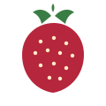

Szentendre – Kalászi út
Zárva
Itt később napi státusz, készletjelzés és egy útvonal gomb is megjelenhet.
Útvonal / részletek
A cél nem a díszítés. A cél az, hogy a látogató 10 másodperc alatt megtalálja a lényeget: nyitva van-e, mennyi az ár, hol vannak a földek, hogyan tud elindulni, és hogyan lép kapcsolatba veletek.
Itt később napi státusz, készletjelzés és egy útvonal gomb is megjelenhet.
Útvonal / részletekA helyszínkártya célja az, hogy a látogató ne a szövegtengerben vadásszon.
Útvonal / részletekEz a blokk később fotóval, nyitvatartással és aktuális állapottal is bővíthető.
Útvonal / részletekMobilon is jól átlátható, nincs ismétlődő menü és nincs széteső szerkezet.
Útvonal / részletekA mostani oldal fő hibája, hogy minden információ egyforma súlyú. Ezért a felhasználó keresgél. A modern verzióban a hierarchia világos: állapot, ár, szezon, helyszínek, kapcsolat.
Nincs széteső menü, nincs felesleges duplikáció, nincs szövegtenger.
Rendezett arculat, tiszta kapcsolat blokk, professzionális első benyomás.
Nyitás, ár és napi státusz egy adminfelületen is gyorsan átírható.
Telefon, e-mail, útvonal, Facebook és szezoninformáció jól látható CTA-kban jelenik meg.
Ezeket a kérdéseket a legtöbb látogató előbb-utóbb felteszi. Ha a weboldal előre megválaszolja, kevesebb a fölösleges hívás és tisztább az élmény.
A mostani kapcsolat oldal gyakorlatilag egy szövegblokk. Ez itt egy olyan verzió, ahol a látogató azonnal látja, hogyan tud írni, telefonálni vagy megnyitni a címet.